Support Goods
3,000円前後
夢どんぶり SUPPORT GOODS
ノート、アクリルスタンド、クリアマルチケースなど。気軽に参加できるドネーションアイテム。
150円が熊本復興支援へ
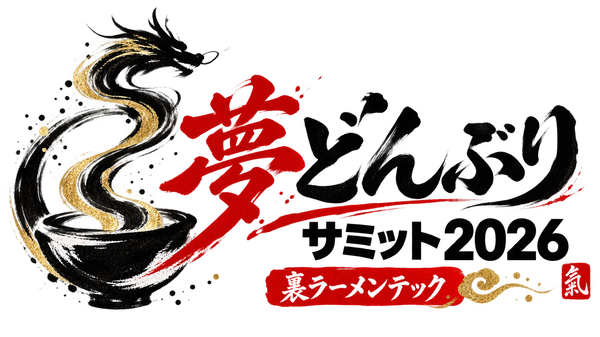
RAMEN TECH 2026 OFFICIAL LINK EVENT ↗
2026.10.10 SAT — THE RITZ-CARLTON, FUKUOKA 24F
Yume DonburiSummit 2026
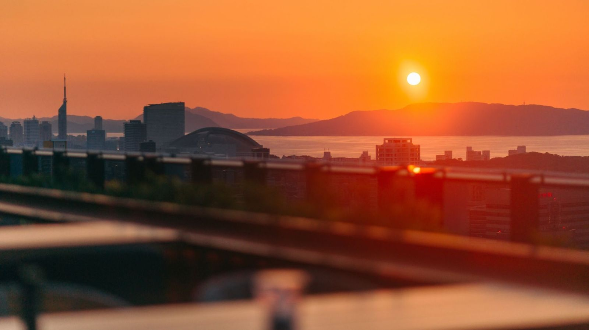
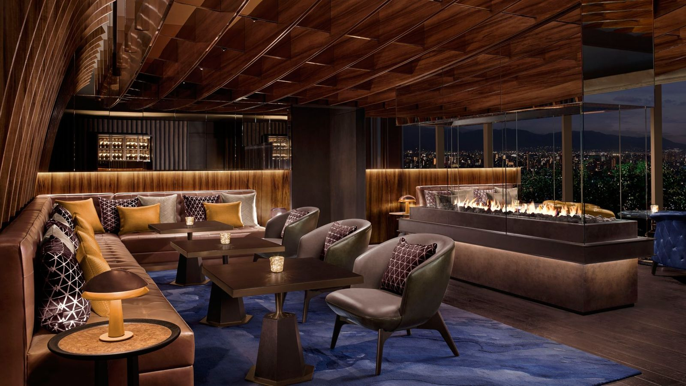
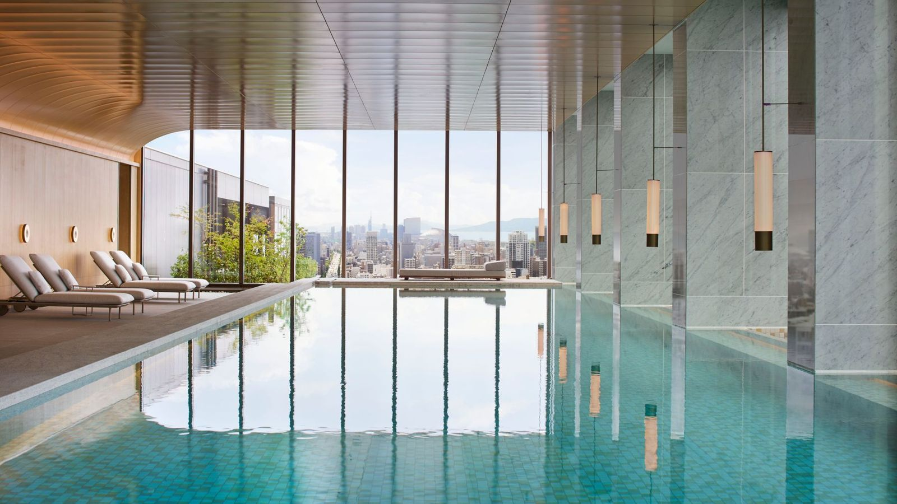
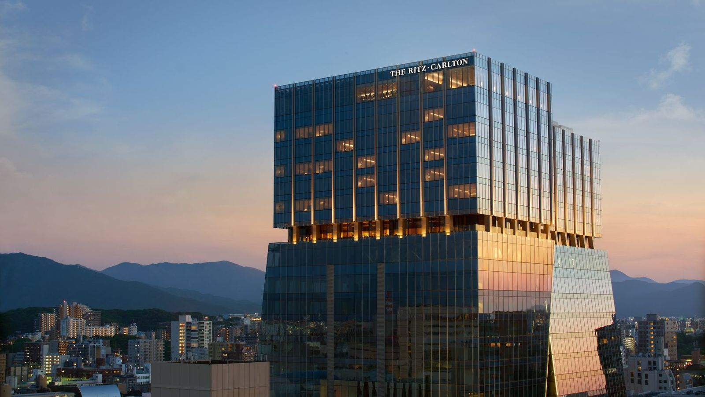
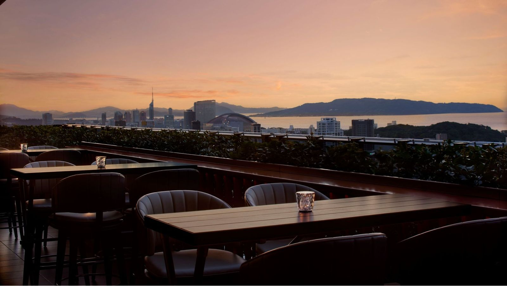
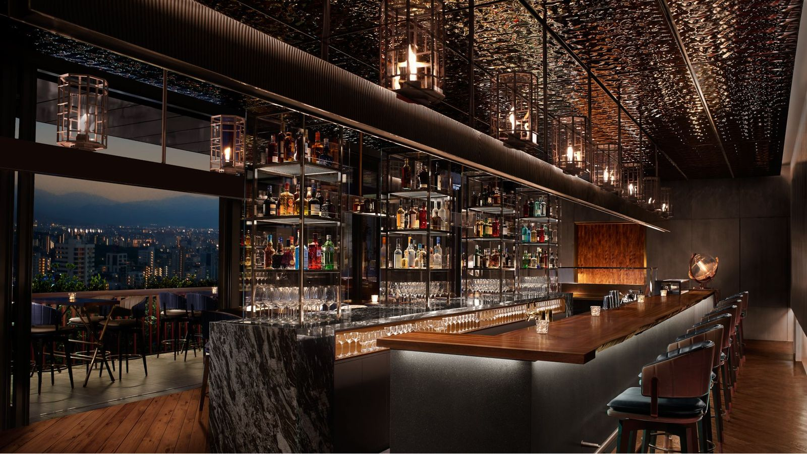
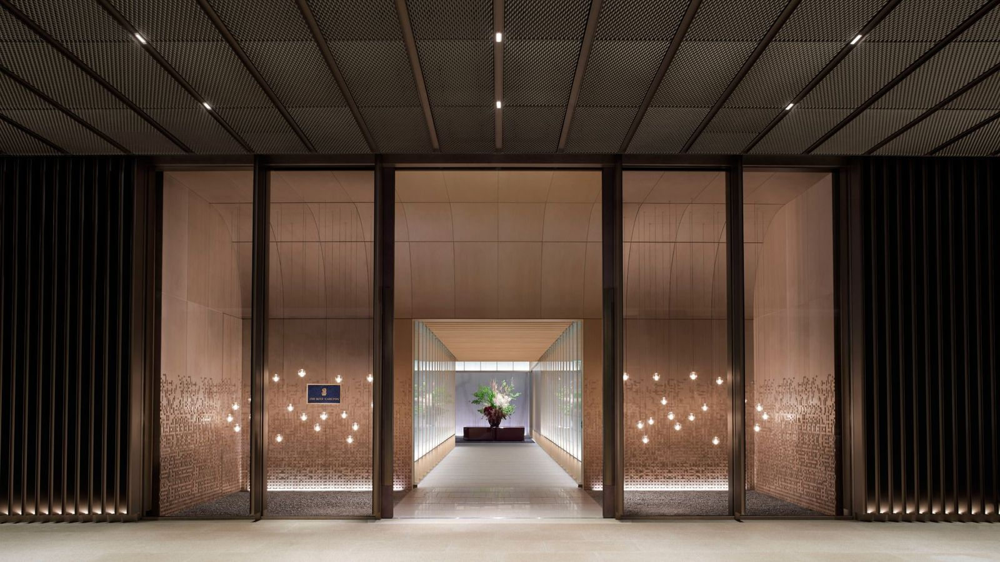
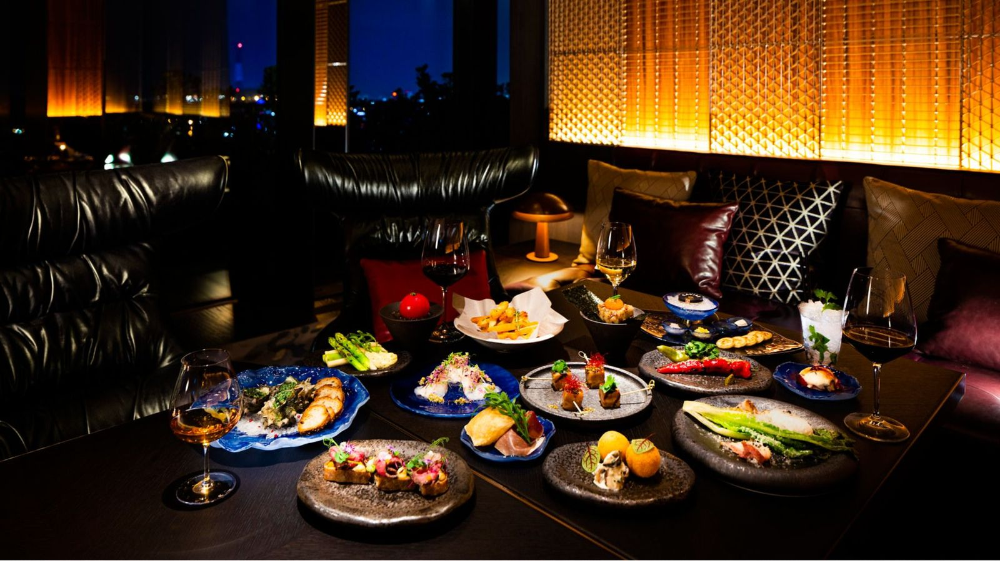
Scroll Down
About
夢どんぶりサミットは、
福岡のこれからを担う若者と、地域の企業、スタートアップ、国内外の知見を、ひとつの器🍜に混ぜる一日。
昼は、学生や若者が自分の言葉で挑戦を語り、企業や経営者と同じテーブルにつくカンファレンス☀️。夜は、Founder／CEOがDJブースに立つネットワーキングナイト🎧。
この日をつくるのは、参加する一人ひとり。応援する人も、語る人も、聞く人も、みんなでひとつの器を満たします。
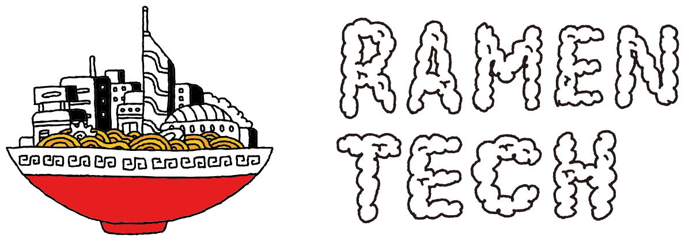
RAMEN TECH 2026 Official Link Event
夢どんぶりサミットは、福岡市の共創イノベーションウィーク「RAMEN TECH 2026」（2026.10.07–10.11）の公式リンクイベントです。期間中、福岡に集まる国内外のスタートアップ・企業・投資家・クリエイターと、この一日でつながります。
RAMEN TECH 2026 公式サイト ↗福岡の学生・若者が、挑戦の原体験・現在地・これからを自分の言葉で語り、会場の企業・経営者と対話します。
STYLY × Aiwa Digital Labs による Spatial Computing／XR のプレゼンとクロストーク。17:52頃には、24階のテラスから福岡に落ちる夕陽を参加者みんなで撮影します。
ヌーラボ 橋本正徳さん、CIC Japan 梅澤高明さんがDJブースに立つ夜の部。音楽とドリンクを囲んで、24:00まで昼に出会った人と話し込めます。
民間の実行委員会がつくる、応援で成り立つ一日。税金や補助金を使わず、サポーターと協賛企業の応援だけで運営します。応援してくれた人の名前は、このページとTシャツの背中に残します。いただいたドネーションの5％は、熊本復興支援へ寄付します。
Venue
大名ガーデンシティの最上階、福岡の街と海を見下ろすバーが会場です。昼のカンファレンスから夜のDJナイトまで、一日を通してこの場所で行います。17:52頃、テラスに夕陽が落ちる。撮って、共有して、夜の部へ。
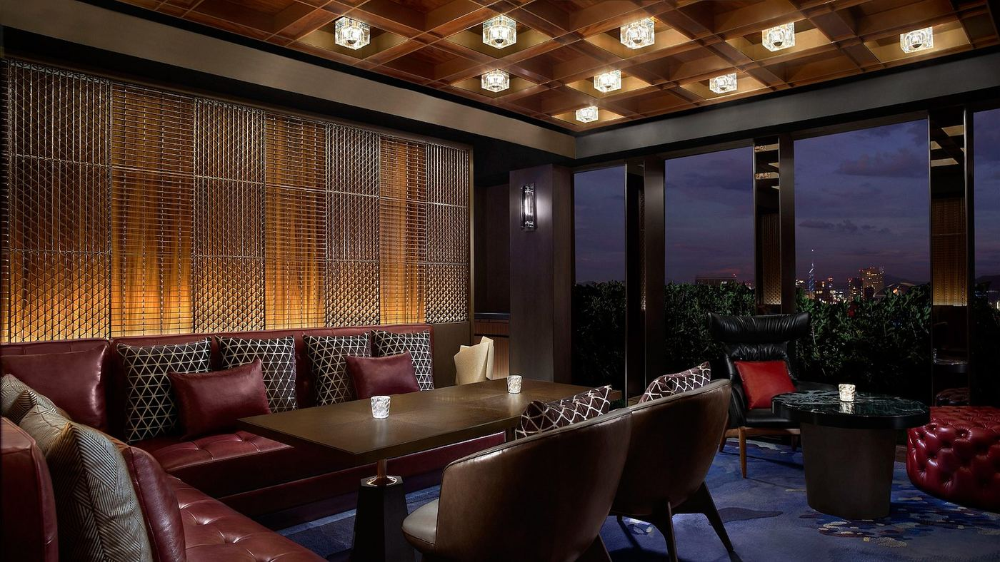
最上階のバー「The Bay Bar」が会場
14:00から24:00まで、昼の部と夜の部をひとつなぎに
福岡に夕陽が落ちる Sunset Shooting Time
The Ritz-Carlton, Fukuoka 24F The Bay Bar｜福岡県福岡市中央区大名2-6-50 大名ガーデンシティ 24F Photo: The Ritz-Carlton, Fukuoka
1Day Program
プログラムは、確定したものから順次公開します。時間・内容・出演者は今後の調整により変更となる場合があります。
Guests
出演者は確定した方から順次公開します。
Join
夢どんぶりサミットに、フリーの入場券はありません。参加する人が自分でこの日を応援し、その応援で会場と運営をまかなう「SUPPORTED ENTRY」。3,000円から、名前の掲載や夜の部への招待という形で、この日の一員になれます。
Day昼の部
学生・若者・企業関係者が参加しやすい設計にします。
参加ルールは近日公開
Night｜事前夜の部に招待で参加
LINK SUPPORTER などの個人サポーターで招待権を取得。事前リスト登録 → 受付 → 入場。
下のプランから選ぶ ↓
Night｜当日夜の部に当日参加
当日、会場で夢どんぶりへのドネーションをお受けし、ご入場いただきます。
10,000円＋3ドリンクチケット
グッズを買うことで、熊本復興支援と夢どんぶりの活動の両方を応援できます。SUZURIでの受注販売なので在庫は持たず、必要な人がオンラインで購入します。
Support Goods
3,000円前後
夢どんぶり SUPPORT GOODS
ノート、アクリルスタンド、クリアマルチケースなど。気軽に参加できるドネーションアイテム。
150円が熊本復興支援へ
Support T-shirt
5,000円前後
夢どんぶり SUPPORT T-SHIRT
白ベース・表裏プリントのドネーションTシャツ。背面のDREAM SUPPORTERS欄に、名前掲載サポーターの名前が入ります。
250円が熊本復興支援へ
1点買うと、こう分かれます
LP Supporter
3,000円
公式LPに名前掲載
T-shirt Back
8,000円
Tシャツ背面に名前掲載
Dream Supporter
9,000円
LP＋Tシャツ背面に名前掲載
夜の部に参加できる
Link Supporter
10,000円
名前掲載＋招待枠1名＋1DRINK
Free Supporter
お気持ちの金額で
金額に応じて名前掲載
※個人サポーターは「現物価格」ではなく、名前掲載・招待などのサポーター権利です。Tシャツ背面掲載プランにTシャツ現物は含まれません（ドネーショングッズとして別途購入）。※いただいたドネーション金額の5％を、熊本復興支援へ寄付します。
お申し込み・お支払い方法は準備中です。準備が整い次第、このページとSNSでご案内します。
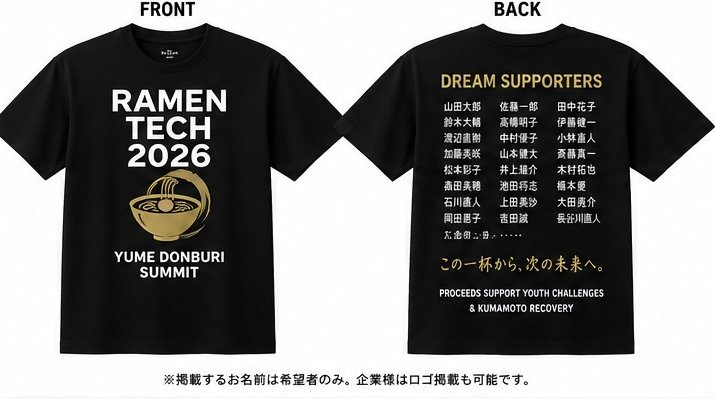
Dream Supporters T-shirt
背面に、応援してくれた人の名前を刻みます。SUZURIの受注販売で在庫は持たず、必要な人がオンラインで購入。1枚買うごとに250円が熊本復興支援へ届きます。次回以降は色を変え、参加した世代がひと目でわかるメンバーシップアイテムへ育てていきます。
※デザインは案です。現在は白ベース・表裏プリントで調整中。背面の名前はイメージで、今後変更となる場合があります。
Corporate Partner
若者支援、事業・PoC、地域接続、発信。企業・団体の目的に合わせて、4つのプランから内容を調整します。大企業だけでなく、地場企業・Founder・経営者個人の方もご相談ください。
Supporter
100,000円（税別）
招待4名｜1DRINK付
地場企業・Founder・経営者個人
Link Partner
300,000円（税別）
招待6名｜1DRINK付
採用・地域共創・新規事業を考える企業
Future Partner
500,000円（税別）
招待12名｜1DRINK付
PoC・展示・事業開発を考える企業
Co-Creation
1,000,000円（税別）
招待24名｜2DRINK付
独自企画・共創を設計したい企業
※金額は税別です。内容は企業様の特性に合わせて調整可能です。※応援いただいた費用の一部は、熊本復興支援として活用させていただきます。
Partners
Dream Supporters
現在のサポーター：0名
RAMEN TECH 2026 Official Link Event
RAMEN TECH は、2026年10月7日〜11日に福岡で開催される共創イノベーションウィークです。国内外のスタートアップ、企業、投資家、エンジニア、クリエイター、研究者が福岡に集まります。夢どんぶりサミットは、その公式リンクイベントとして10月10日に開催します。
RAMEN TECH 2026 公式サイト ↗福岡に集まる若者・企業・起業家・国内外の知見
挑戦・事業資産・技術を一つの場に混ぜる
共創・PoC・新規事業・支援・イベント後の関係性
FAQ
若者・学生、地域企業・中小企業、スタートアップ、経営者、クリエイター、国内外の有識者、支援者・協力企業など、挑戦と共創に関心のある方を想定しています。
昼はトークやセッションを中心に、若者の挑戦や事業を可視化します。夜はFounder／CEO DJとネットワーキングを通じて、昼に生まれた接点を次の行動につなげます。
事前は LINK SUPPORTER などの個人サポーターで招待権を取得し、リスト登録後に受付する形です。当日は10,000円のドネーション＋3ドリンクチケットでの入場を予定しています。詳細は確定後にご案内します。
お申し込み・お支払い方法は準備中です。準備が整い次第、このページと実行委員会のSNSでご案内します。
はい。若者支援、採用、新規事業、技術・端末・施設でのPoC、展示、PRなどを、企業・団体の目的に合わせて個別に設計します。
本ページは、確定した情報から順次公開しています。時間、出演者、実施内容は今後変更となる場合があります。